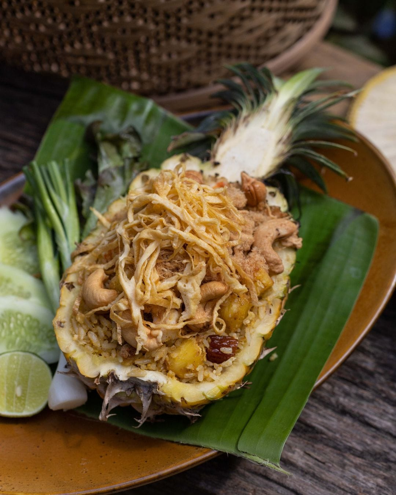
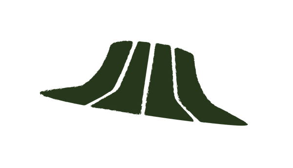

กิจกรรม ・ ร้านอาหาร
รับประทานอาหารที่ร้านแนชูร่า
อาหารไทยจากสวนสู่โต๊ะเปิดทุกวันไม่ต้องจองล่วงหน้า
กลับไปหน้ากิจกรรมทั้งหมด

กิจกรรมอาหารไทยจากสวนสู่โต๊ะที่ร้านแนชูร่า
ร้านแนชูร่าตั้งอยู่ในสวน เสิร์ฟอาหารไทยท้องถิ่นที่ปรุงจากวัตถุดิบซึ่งปลูกอยู่ห่างจากครัวเพียงไม่กี่ก้าว จากสวนสู่โต๊ะอย่างแท้จริง
สมุนไพร ผลไม้ และผักที่ปลูกห่างจากครัวไม่กี่ก้าว เดินทางจากแปลงสู่จานโดยตรง ในเมนูมีทั้งแกงเผ็ด แกงมัสมั่น ผัดไทย ต้มยำ และผัดผักบุ้ง รวมถึงจานอย่างปูผัดพริกขี้หนูสวน พร้อมเค้กและของหวานจัดจานให้เลือกอีกหลายอย่าง
ไม่ต้องจองล่วงหน้า เดินเข้ามาได้ทุกวันที่สวนเปิด จะมาเองหรือแวะต่อหลังจบกิจกรรมนั่งเรือ เวิร์กช็อป หรือทัวร์เดินชมสวนก็ได้
บรรยากาศในสวน
ที่ร้านแนชูร่า
แตะที่ภาพเพื่อดูขนาดเต็ม
รายละเอียด
ข้อมูลกิจกรรม
- รูปแบบ
- ร้านอาหารในสวน ・ เดินเข้ามาได้เลย
- เมนู
- อาหารไทยจากสวนสู่โต๊ะ ใช้วัตถุดิบท้องถิ่น
- ข้อมูลเพิ่มเติม
- ไม่ต้องจองล่วงหน้า
แผนที่
สอบถามติดต่อเรา
สอบถามวันเวลา กลุ่มใหญ่ หรือข้อมูลเพิ่มเติมได้ตามช่องทางด้านล่าง
+66 95 968 0270 · Reservation.poomjai@gmail.com